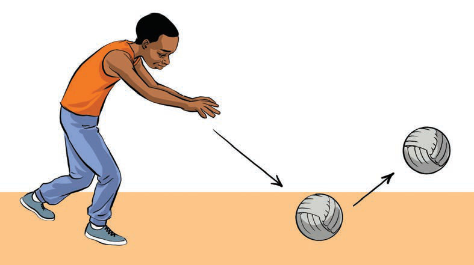

Kielelezo namba 11: Kufanya zoezi la pasi ya mdundo
 Kazi ya kufanya namba 9
Kazi ya kufanya namba 9
Fanya mazoezi ya pasi ya mdundo
Pasi ya juu
Pasi ya juu ni urushaji wa kupitisha mpira kutoka juu ya kichwa cha mchezaji mmoja kuelekea kwa mchezaji mwingine aliye mbali. Pasi hii hutumika mara nyingi wakati mchezaji anapohitaji kufikisha mpira kwa umbali mrefu au wakati anapotaka upite juu ya vikwazo vya wachezaji wa timu pinzani. Ili kufanya pasi hii, mchezaji anasimama wima, anachukua mpira kwa mikono yote miwili nyuma ya kichwa, kisha kurusha mbele kwa nguvu na usahihi ili kumfikia mchezaji wa mbali, kama inavyoonekana katika Kielelezo namba 12.